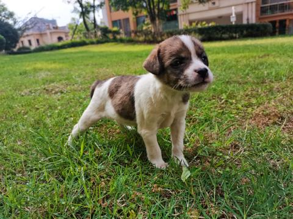
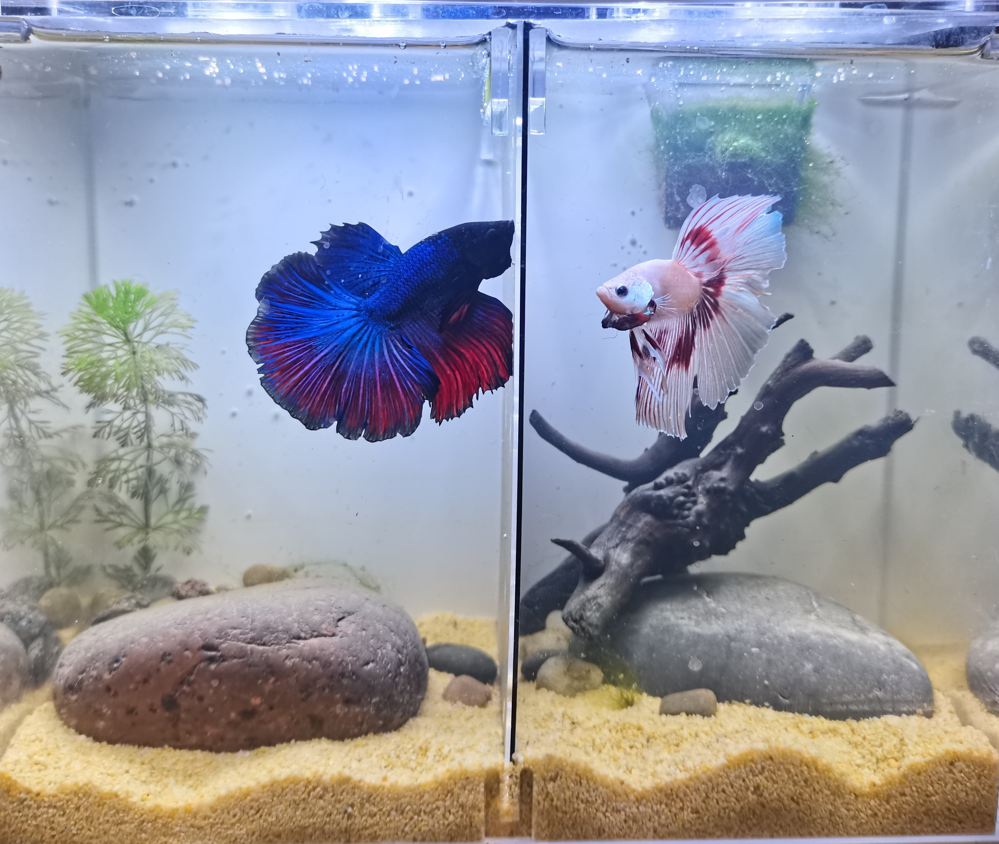
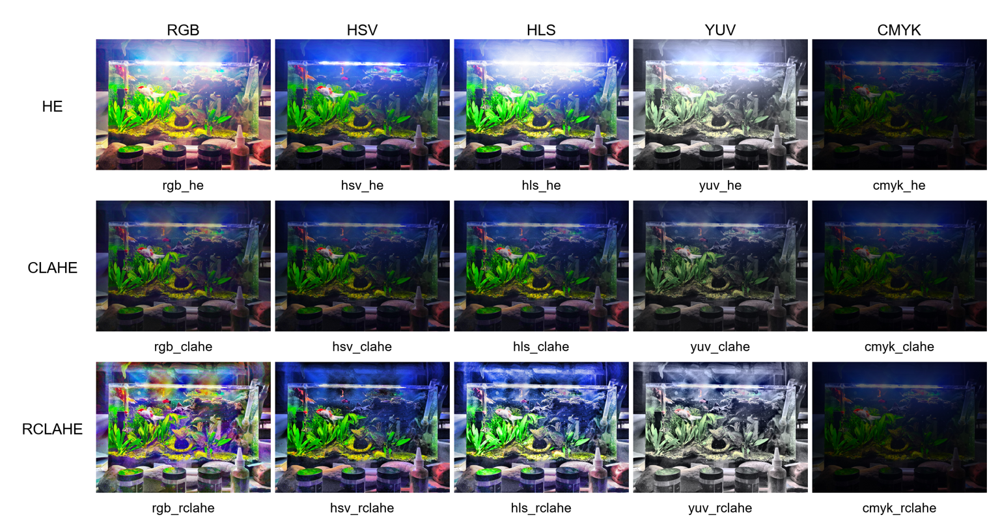

|

|
万光荣 |
重庆邮电大学:软件工程学院（2021/9 - 2025/7）GitHub: Glory-R邮箱: glory947446@gmail.com 电话：19562102683 |
研究兴趣：
0 我感兴趣的研究方向是：
类脑智能、人工智能、知识表征学习、脑科学、多模态模型。 |
|  | Enhancing Desired Features in Low-Light Images Using High-level semantics and Specific Target-guided Modules（预投 2025 CVPR） |
| |
HD-MTV: A Highly Decoupled Multi-task Model for Joint Image Classification, Semantic Segmentation, Instance Segmentation, and Object Detection |
 |
A Comparative Survey: Evaluating Low-Light Image Enhancement Algorithms on high-level Computer Vision Tasks |
| |
A Comparative Survey: Evaluating Low-Light Image Enhancement Algorithms on high-level Computer Vision Tasks |
|
LLIE Library 一个集成了多种传统低照度增强方法的 Python 库
代码连接：https://github.com/glory-wan/LLIE-Lib |
 |
|
3MNet 对论文《》的实现。 代码连接： https://github.com/Glory-R/LibLLIE |
 |
|
TSAS 对论文《*》的实现。 Work with Ce Liu |
|
|
LibLLIE 对论文《*》的实现。 Work with Ce Liu |
|
|
LibSegmentation 对论文《*》的实现。 Work with Ce Liu |
|
|
Pytorch 实现 YOLO series 对论文《*》的实现。 Work with Ce Liu |
|
|
Pytorch 实现 Unet 对论文《*》的实现。 Work with Ce Liu |
|
竞赛经历
| 全国大学生数学竞赛 | 全国大学生英语竞赛 |
| 全国大学生数学建模竞赛 | 美国大学生数学建模竞赛 |
| 挑战者杯 | 创新创业创意大赛 |
证书
| 软件著作权 2023SR1743025 | |